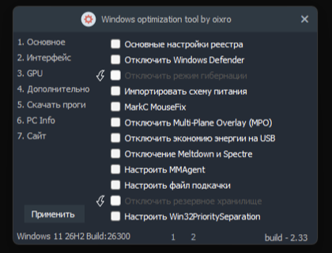
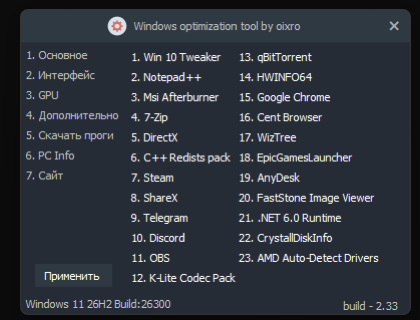

Основное
Реестр, Defender, схема питания, гибернация, файл подкачки, MPO, USB, Spectre/Meltdown, MMAgent, Win32Priority.
Windows 10 · 11 / x64 / v2.33
WOTBO меняет реестр, питание, GPU и проводник и запоминает исходные значения, чтобы вернуть всё назад. 48 твиков, открытый код, без подписок.

Твики
48 настроек в шести разделах. Каждая применяется и откатывается отдельно — можно взять только то, что нужно.
Раздел 1
Реестр, Defender, схема питания, гибернация, MPO, USB, Spectre/Meltdown, файл подкачки.

Раздел 3
HDCP, настройки NVIDIA, Ansel, DirectPlay, установка NV CleanInstall и DDU.

Раздел 5
23 программы в один клик: 7-Zip, OBS, Discord, Telegram, Chrome, HWiNFO и другие.
Возможности
Номера совпадают с вкладками в программе.
Реестр, Defender, схема питания, гибернация, файл подкачки, MPO, USB, Spectre/Meltdown, MMAgent, Win32Priority.
Кнопки окон, старая шапка проводника, контекстное меню Windows 11, синие папки, полупрозрачный проводник, анимации.
HDCP, NVIDIA и Nvidia Profile Inspector, Ansel, DirectPlay, NV CleanInstall, DDU.
Политики Edge, удаление OneDrive, очистка WinSxS и обновлений, CompactOS, ffmpeg, закрепление окон.
23 программы: браузеры, утилиты, кодеки. Ссылки ведут на актуальные версии.
Процессор, материнская плата, GPU, объём ОЗУ, экран, версия Windows и дата установки.
Почему так
Обновления
Загрузка списка изменений…
Загрузка…
Гайды
Требования